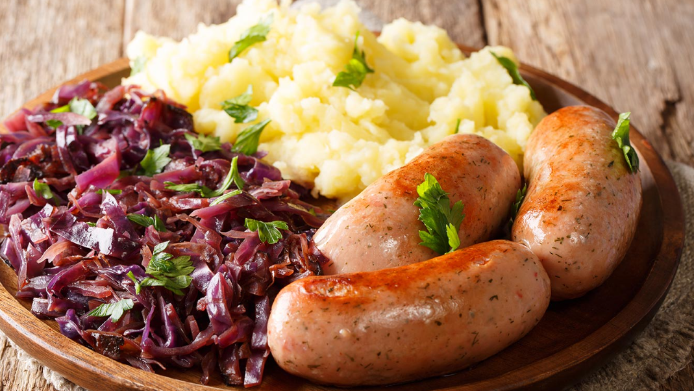
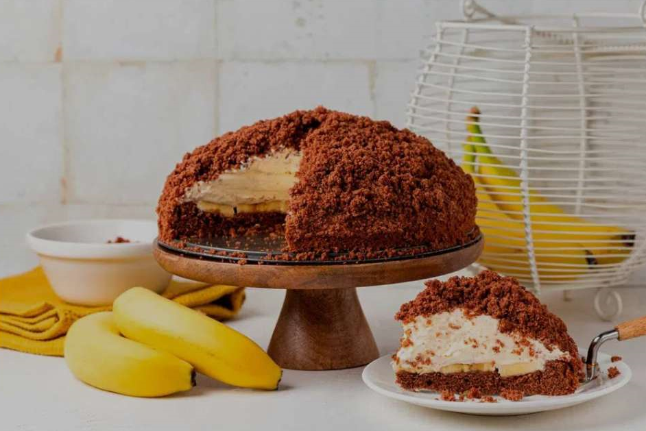
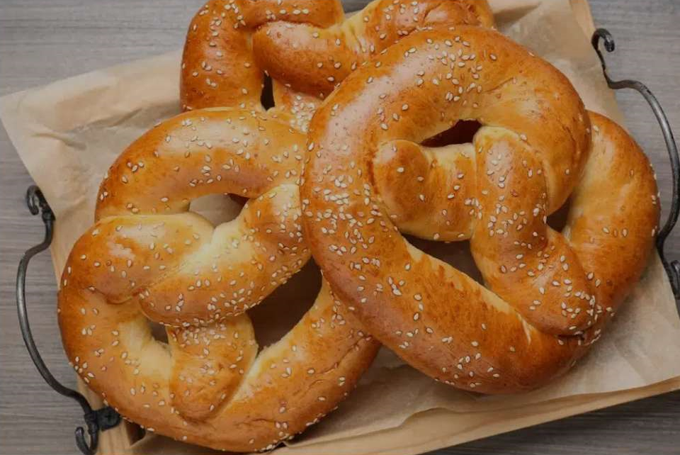

Datos Generales
La culinaria alemana se presenta como un auténtico tesoro gastronómico que muestra la abundante historia y variedad regional de esta nación europea. Con el paso del tiempo, la cocina alemana ha experimentado cambios y ajustes, sin embargo, ha conservado inquebrantablemente su identidad única y su profundo compromiso con la excelencia de los ingredientes.
MaulwurfkuchenEl maulwurfkuchen, también conocido como «pastel de topo», es un delicioso postre tradicional característico de la cocina alemana, convirtiéndose en un plato popular en todo el país. Su nombre proviene de su apariencia, ya que se asemeja a un «montículo de tierra creado por un topo». Este pastel es apreciado por su sabor rico y su textura suave y esponjosa. Es el postre perfecto para cualquier ocasión especial o simplemente para disfrutar en una tarde acompañado de un café o té. En su proceso de elaboración se siguen varios pasos muy parecidos a las tartas o pasteles de chocolate con plátano que ya conocemos. Se comienza haciendo un bizcocho de chocolate y una vez horneado, se corta en capas y se rellena con crema batida, plátano y chocolate. El resultado final es un pastel exquisito cubierto con una capa adicional de crema y decorado con la misma masa bizcochada desmenuzada, su sabor es único y con una presentación muy llamativa. Una vez que el pastel está relleno, se cubre con una capa adicional de crema y se decora con virutas de chocolate y plátano

|
PretzelsPretzels caseros, también conocidos como bretzels. Son un tipo de bollos horneados, típico de la gastronomía alemana, cuya forma característica es la de un lazo enrollado, de sabor salado y adornado con sésamo y sal. Son comúnmente conocidos por su peculiar corteza tostada conseguida a base cocerlos en agua caliente con bicarbonato antes de llevarlos a hornear. Esto le aporta también un sabor especial que los hace inconfundibles.

|
Strammer MaxConsiste en un sándwich abierto de pan tostado de hogaza de centeno y trigo, untados con mantequilla y cubierto de jamón serrano y unos huevos fritos. En Alemania y concretamente en su capital Berlín, este fabuloso aperitivo se sirve en casi todos los bares en donde cada cual, le añade su punto personal a la preparación tradicional, como por ejemplo tomate, queso o cebolla, pero eso ya dista bastante de la receta original. Preparar un rico Strammer max es muy sencillo y solo nos llevará unos minutos de nuestro tiempo. Imagínate por un momento, esta tostada cubierta de jamón y unos huevos fritos para pegarte un buen almuerzo a media mañana, con una cervecita o tu refresco favorito. 
|